Aenean ornare velit lacus, ac varius enim lorem ullamcorper dolore aliquam.
For this analysis, the model has been trained with 1000 samples, then additional 100 samples have been used for testing. This analysis is done with three applications, high, intermediate, and low biased experiments. I sorted the experiments randomly, and listed the ordering in the x ticks.
I used virtual measurements for this analysis such that some samples are selected as measurements. And the meeasurement uncertainty is set to be small about 10 pcm. Each time the discrepancy between bias and true bias is calculated. And the means and the standard deviations of the 200 testing results are plotted.
I sorted the experiments 20 times, so I generated 20 figures the corresponding random sortings. We see in those figures that some specific experiments, for examples 19th experiment in high biased case, cause sudden drop in uncertainty. I will dig into it, and try to find any specialties or properties of the experiment, which cause those sudden behavior.
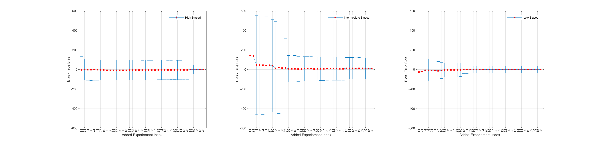 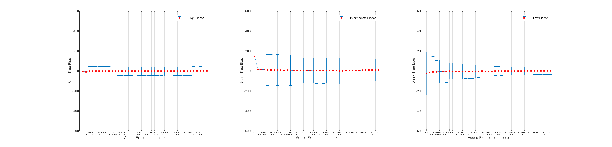 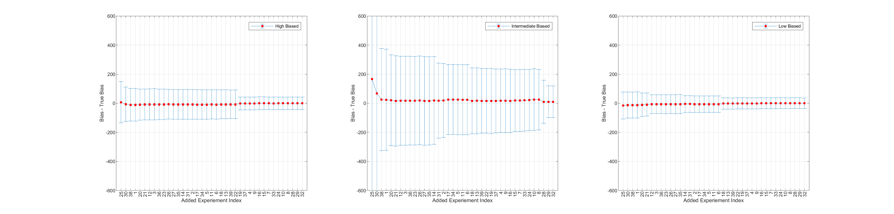 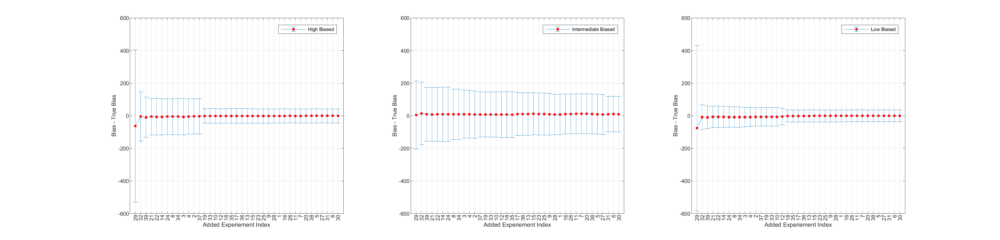 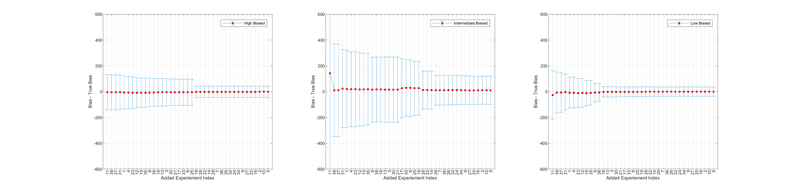 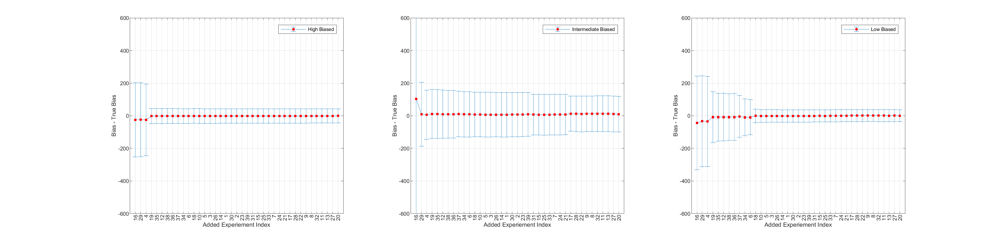 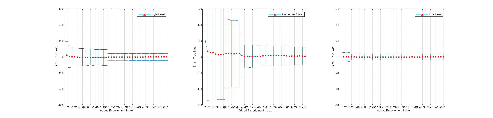 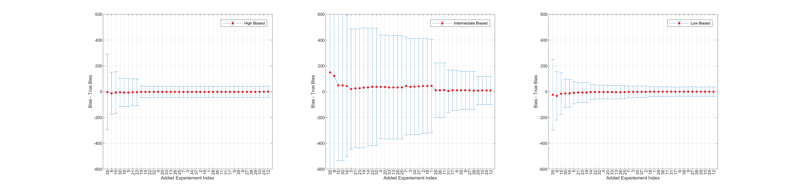 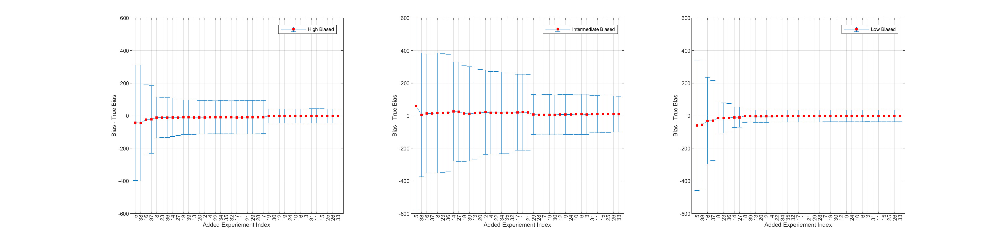 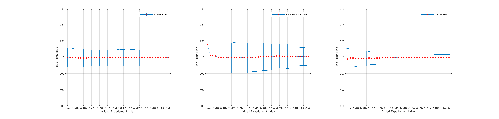I sorted the experiments 20 times, so I generated 20 figures the corresponding random sortings. We see in those figures that some specific experiments, for examples 19th experiment in high biased case, cause sudden drop in uncertainty. I will dig into it, and try to find any specialties or properties of the experiment, which cause those sudden behavior.
Now, I excluded the experiments which cause sudden drops. The first five plots represent the results where exp 19 is excluded. The next five exp 29, and the last five exp 18.
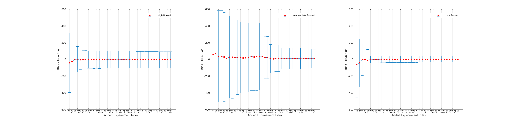 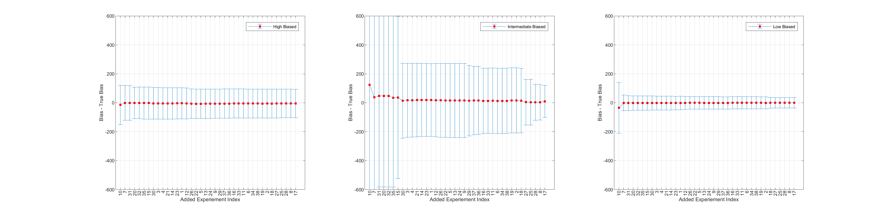.png) 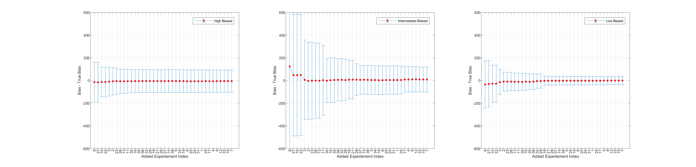
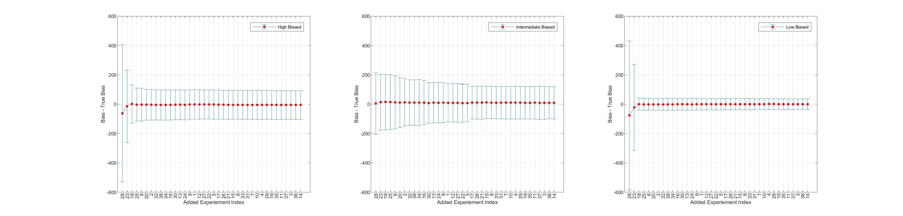
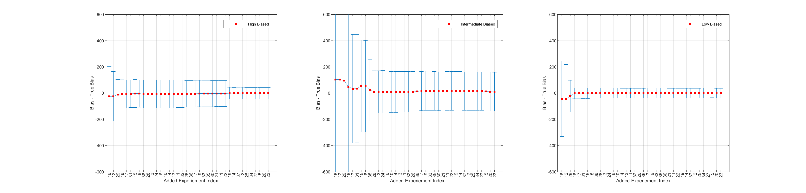
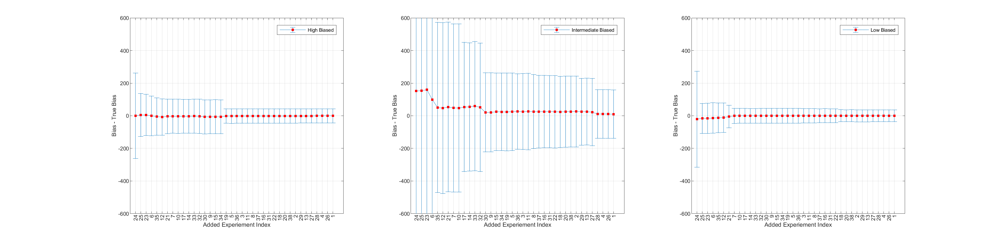
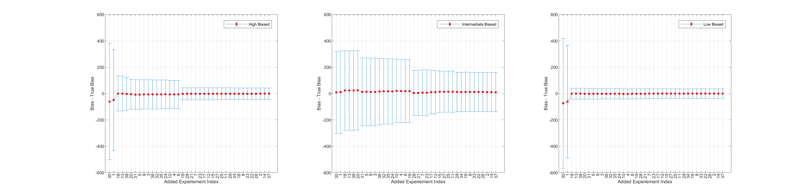
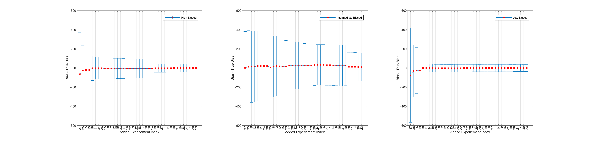
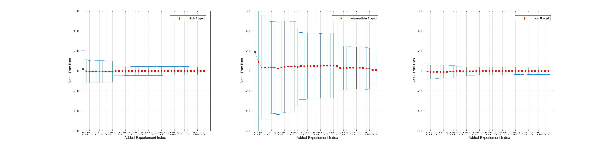
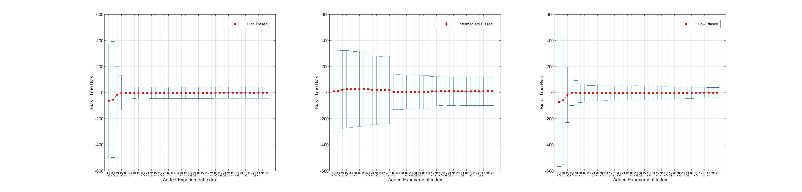
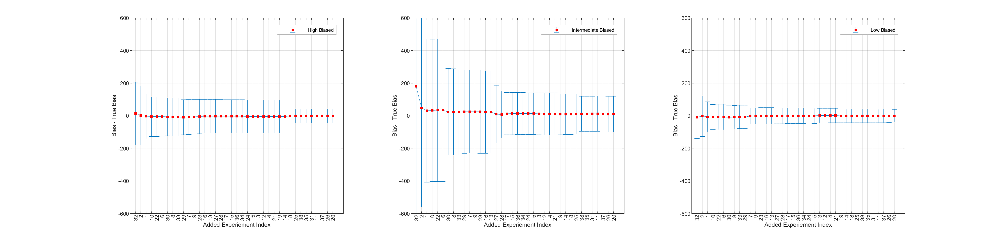
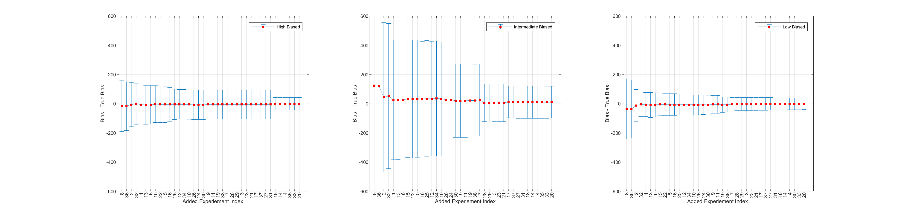
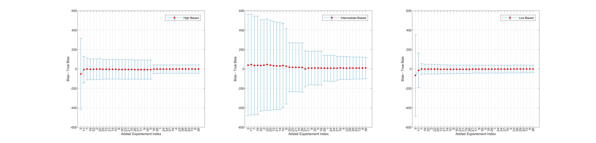
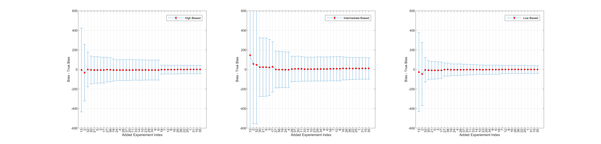
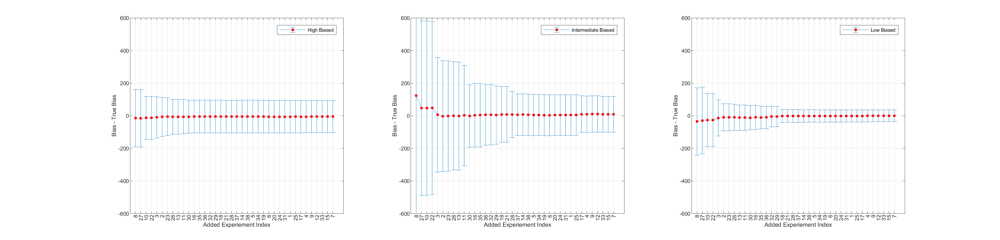
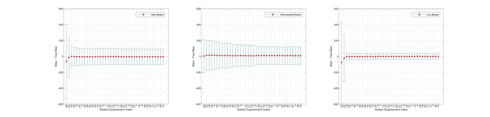
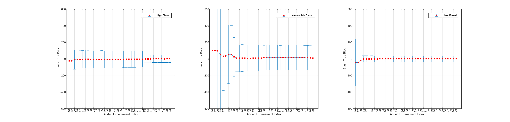
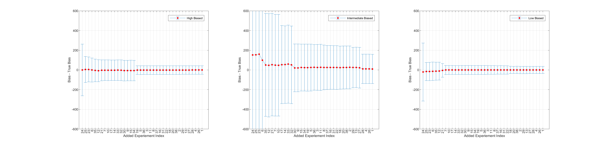
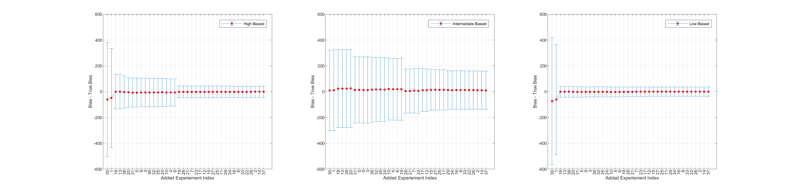
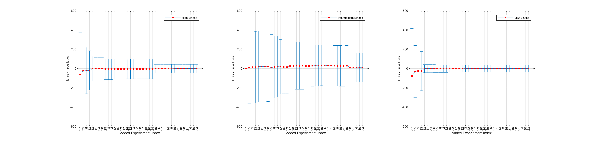
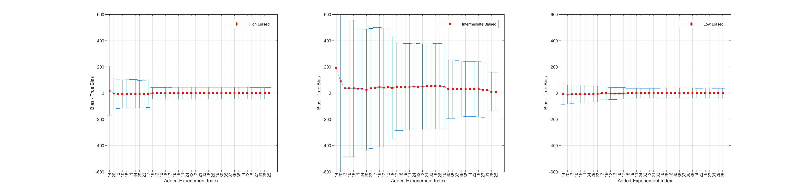
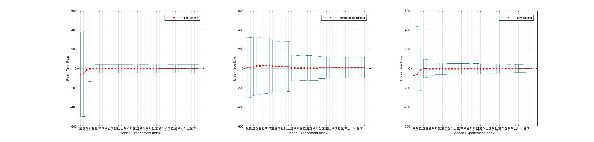
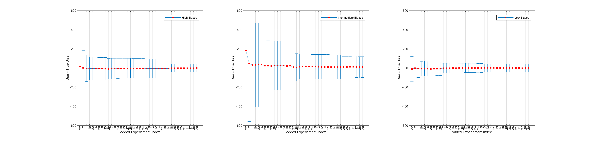
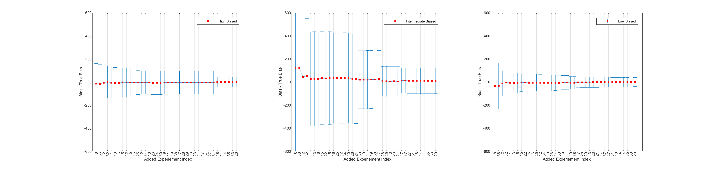
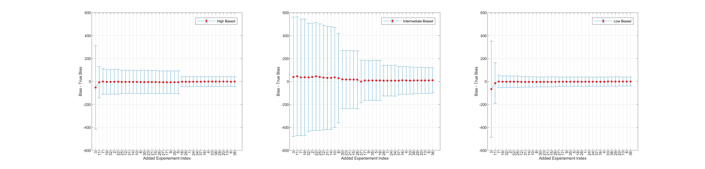
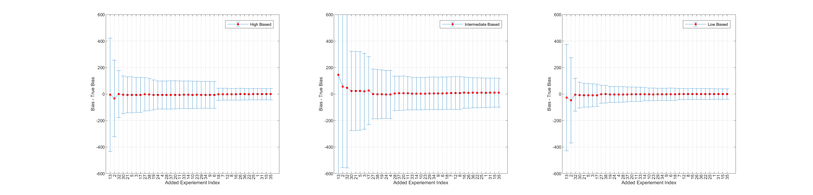
Aenean ornare velit lacus, ac varius enim lorem ullamcorper dolore aliquam.

Aenean ornare velit lacus, ac varius enim lorem ullamcorper dolore aliquam.

Aenean ornare velit lacus, ac varius enim lorem ullamcorper dolore aliquam.
Sed varius enim lorem ullamcorper dolore aliquam aenean ornare velit lacus, ac varius enim lorem ullamcorper dolore. Proin sed aliquam facilisis ante interdum. Sed nulla amet lorem feugiat tempus aliquam.